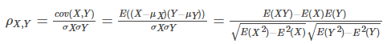
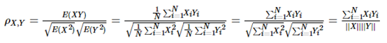
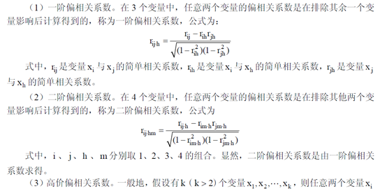
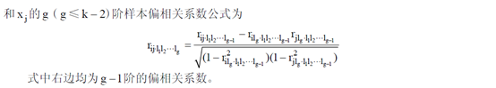
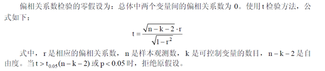
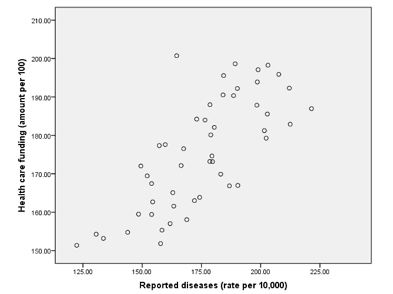
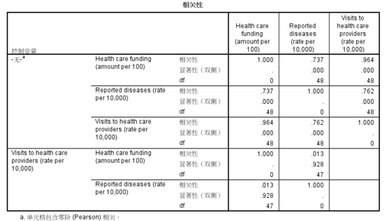
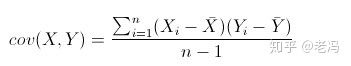

相关性分析以及偏相关分析的数学模型及spss应用
一、先来看相关度（双变量）
（1）正相关：如果x,y变化的方向一致，如身高与体重的关系，r>0；一般地，
· |r|>0.95 存在显著性相关；
· |r|≥0.8 高度相关；
· 0.5≤|r|<0.8 中度相关；
· 0.3≤|r|<0.5 低度相关；
· |r|<0.3 关系极弱，认为不相关
（2）负相关：如果x,y变化的方向相反，如吸烟与肺功能的关系，r<0；
（3）无线性相关：r=0。
如果变量Y与X间是函数关系，则r=1或r=-1；如果变量Y与X间是统计关系，则-1<r<1。
（4）r的计算有三种：
①Pearson相关系数：对定距连续变量的数据进行计算。
②Spearman和Kendall相关系数：对分类变量的数据或变量值的分布明显非正态或分布不明时，计算时先对离散数据进行排序或对定距变量值排（求）秩。
实际上，对任何类型的变量，都可以使用相应的指标进行相关分析。也就是，有各种参数，对适合它们的变量进行分析。
二、相关系数的数学模型
皮尔森相关系数
皮尔森相关系数（Pearson correlation coefficient）也叫皮尔森积差相关系数（Pearson product-moment correlation coefficient），是用来反应两个变量相似程度的统计量。或者说可以用来计算两个向量的相似度（在基于向量空间模型的文本分类、用户喜好推荐系统中都有应用）。
皮尔森相关系数计算公式如下：

分子是协方差，分母是两个变量标准差的乘积。显然要求X和Y的标准差都不能为0。
当两个变量的线性关系增强时，相关系数趋于1或-1。正相关时趋于1，负相关时趋于-1。当两个变量独立时相关系统为0，但反之不成立。比如对于$y=x2$，X服从[-1,1]上的均匀分布，此时E(XY)为0，E(X)也为0，所以$ρX,Y=0$，但x和y明显不独立。所以“不相关”和“独立”是两回事。当Y 和X服从联合正态分布时，其相互独立和不相关是等价的。
对于居中的数据来说（何谓居中？也就是每个数据减去样本均值，居中后它们的平均值就为0），E(X)=E(Y)=0，此时有：

即相关系数可以看作是两个随机变量中得到的样本集向量之间夹角的cosine函数。
进一步当X和Y向量归一化后，$||X||=||Y||=1$，相关系数即为两个向量的乘积$ρX,Y=X∙YρX,Y=X∙Y$。
三、偏相关系数
“偏相关”过程计算偏相关系数，该系数在控制一个或多个附加变量的效应的同时描述两个变量之间的线性关系。相关是线性相关性测量。两个变量可以完全相关，但如果关系不是线性的，那么相关系数就不是适合度量它们相关性的统计。
示例。在保健基金和发病率之间存在关系吗？尽管您可能希望此类关系都是负相关关系，但研究表明存在显著的正相关关系：随着保健基金的增长，发病率也表现为增长。不过，对保健提供商的拜访率的控制，实际上消除了所观察到的正相关。保健基金和发病率显示为正相关的原因仅仅是：当基金增长时，更多的人可以获得保健服务，从而导致医生和医院所报告的病例更多。
数学模型


偏相关系数的检验

四、SPSS应用
参数设置
散点图

结果分析

Health care funding和Reported diseases 的零阶相关系数为0.737，显著性水平为0.000，是相关的。但是其一阶相关系数为0.013，显著性水平为0.928，远大于0.05，所以相关关系并不显著。
所以这两个变量之间不可以简单的判断是否具有相关关系
补充：
协方差计算：

显著性解释：
可以理解为概率，就是得出错误结论的概率，该概率越大犯错的可能性就越大。所以我们要求显著性水平在0.05一下，因为5%可以被认为是小概率事件